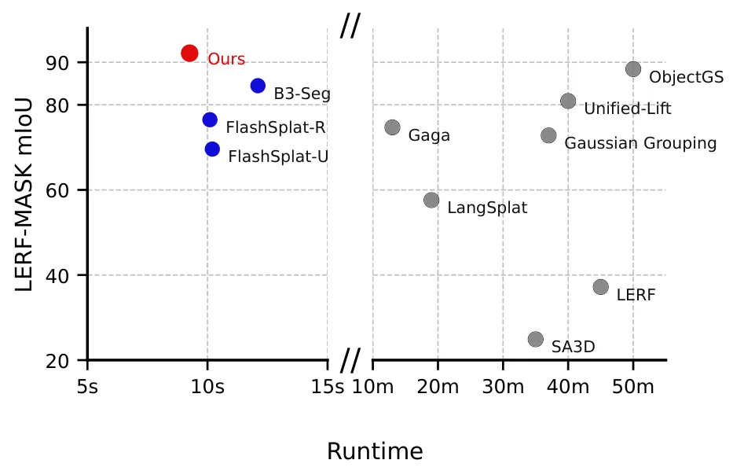
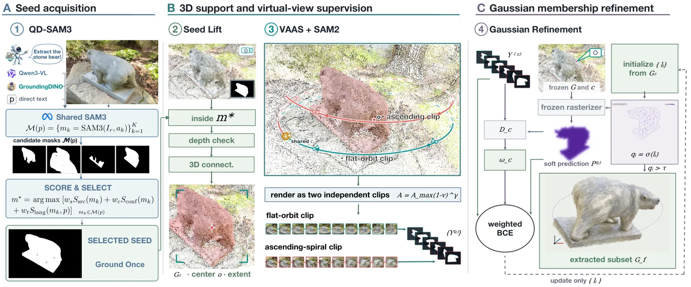
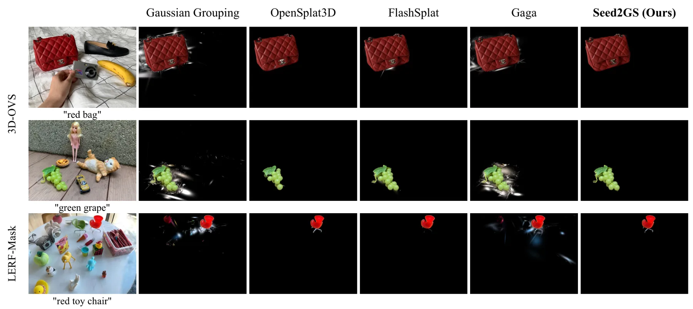
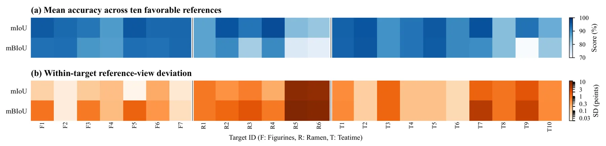
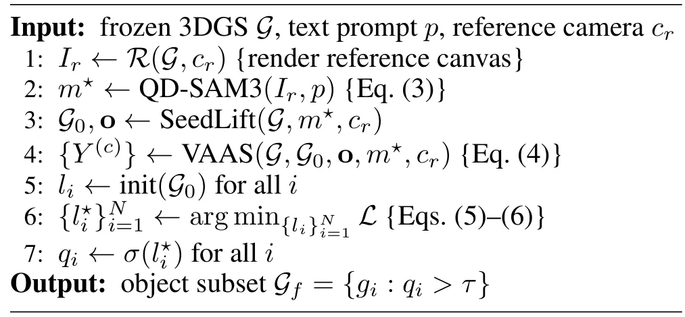
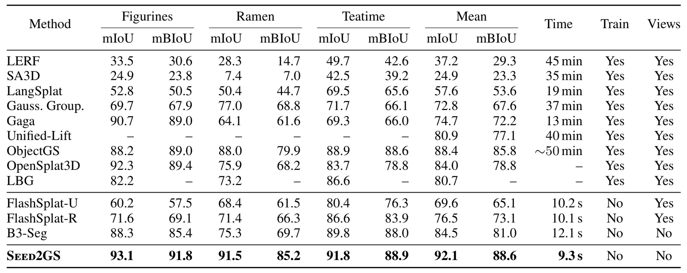
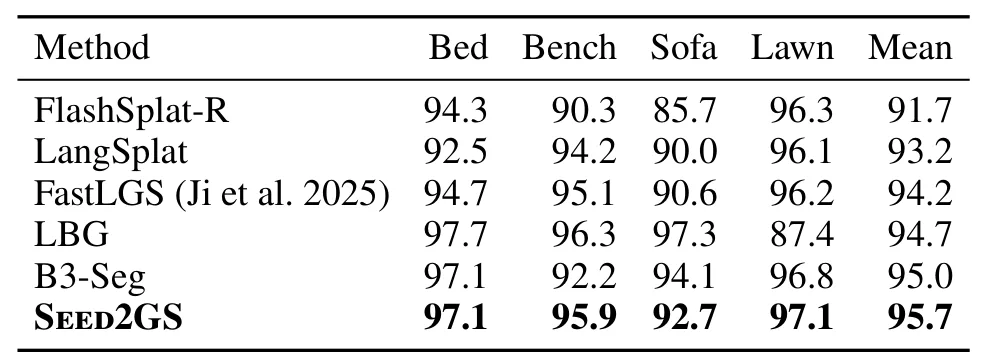
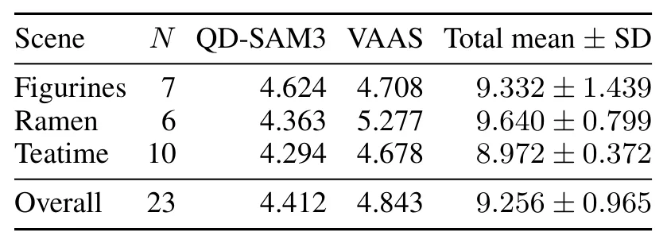
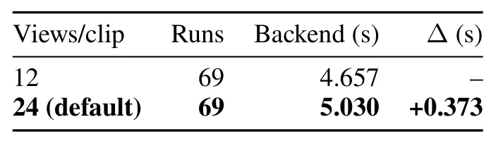
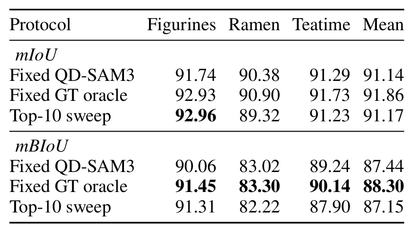

Seed2GS：单参考视图引导的免相机、免训练 3D Gaussian 场景目标提取Seed2GS: Camera-Free, Training-Free Object Extraction from 3D Gaussian Scenes via a Single Reference-View Grounding
对缺失重建相机的 3DGS 资产编辑和语义提取很实用，结果与时延数据突出；但它不是 SLAM 方法，camera-free 的运行边界与端到端成本需进一步厘清。
一句话工作总结
固定一次参考目标身份，再以虚拟视角和 tracking 扩展三维覆盖，在冻结的 3DGS 资产上快速优化临时前景标签。
摘要
Seed2GS 面向没有原始重建相机的预建 3D Gaussian Splatting 场景，仅依赖一个可靠 reference-view grounding 提取目标对象，并且无需逐场景 representation training。QD-SAM3 从多个开放词汇候选中选择参考 mask，以一次性固定目标身份；seed lift 和 visibility-adaptive virtual orbits 从新视角增加目标覆盖，再通过 tracking 传播 seed，避免重复检测。场景表示保持冻结，生成的 masks 只监督每个 Gaussian 的一个临时 foreground logit。摘要报告 LERF-MASK 92.1% mIoU、compute-only latency 9.3 秒；完整固定参考流程为 91.1%，在 3D-OVS 上达到 95.7%。
Extracting a target object from a pre-built 3D Gaussian Splatting (3DGS) scene enables interactive 3D editing. Existing methods either train for tens of minutes per scene, sacrifice accuracy, or require original reconstruction cameras that pre-built assets may not include. We present Seed2GS, which achieves the highest reported LERF-MASK accuracy without original reconstruction cameras or scene-specific representation training. Its key insight is to separate target identity from 3D coverage. QD-SAM3 selects one reliable reference mask from several open-vocabulary candidates, fixing identity once. Seed lift and visibility-adaptive virtual orbits then expose the object from new viewpoints, while tracking propagates the seed without repeated detection. Because the scene remains frozen, these masks supervise only one temporary foreground logit per Gaussian. On LERF-MASK, Seed2GS reaches 92.1% mean intersection over union (mIoU) with a measured compute-only latency of 9.3 seconds, 3.7 points above the strongest scene-trained baseline and 7.6 points above the closest camera-free baseline. With one fixed test reference per scene, the complete pipeline retains 91.1% mIoU; replacing its predicted seed with a ground-truth mask improves mIoU by only 0.72 points. On 3D-OVS, Seed2GS reaches 95.7% mIoU.
中文解读摘录
- 价值：面向缺失原始重建相机的预建 3DGS 资产，仅用一次可靠参考视图 grounding 固定目标身份，再通过虚拟视角覆盖和 tracking 完成三维对象提取，避免逐场景训练。
- 方法与结果：QD-SAM3 从开放词汇候选中选择 reference mask；seed lift 与 visibility-adaptive virtual orbits 暴露新视角并传播 seed，只为每个 Gaussian 优化一个临时 foreground logit，场景表示保持冻结。摘要报告 LERF-MASK 92.1% mIoU、compute-only latency 9.3 秒；完整固定参考流程为 91.1%，3D-OVS 为 95.7%。
- 关注点：这是离线场景编辑/分割而非 SLAM。需核查相机位姿完全不可用时虚拟视角的生成机制、薄结构和严重遮挡失效模式、端到端而非 compute-only 时延，以及 QD-SAM3 对结果的实际贡献。
- 链接：arXiv · PDF
图表/页面预览
{kind=link}

{kind=link}

{kind=link}

{kind=link}

{kind=link}

{kind=link}

{kind=link}

{kind=link}

{kind=link}

{kind=link}
